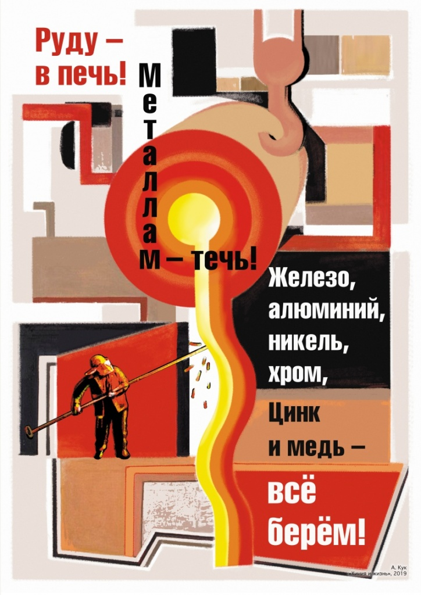

Серия плакатов об элементах, химии и жизни
Содержание статьи
- В мире нет ничего более универсального!
- Мы – звездные существа!
- Всё вокруг – химия!
- Элементы живут в минералах
- Элементы зеленой революции
- Конструкционный материал цивилизации
- Таблица и «наше всё»
- Все краски мира
- Полимеры придумала природа
- Живет Таблица в человеке
- Пластик не виноват!
- Фабрика элементов
Серия просветительских плакатов «ЭЛЕМЕНТАРНО!» посвящена 150-летнему юбилею Периодической таблицы химических элементов. Отмечать юбилей какой-либо таблицы всем миром по меньшей мере экстравагантно. Но в том-то и дело, что Периодическая таблица химических элементов – не «какая-либо». Это – полное собрание всех деталей мира, графическое воплощение едва ли не самого универсального закона мироздания – периодического закона. Это – книга бытия материального мира и это – чудо, чудо познания разумом сути вещей.
Стилистически плакаты серии напоминают известные в России в 1919–1921 годах «Окна РОСТА», и не случайно – нас вдохновляли стихи Владимира Маяковского, участвовавшего в создании этой своеобразной формы массового агитационного искусства. Более того, каждый плакат – это еще и реплика на известное произведение изобразительного искусства конца XIX – начала XX века. Нам кажется, что Дмитрию Ивановичу Менделееву понравился бы такой подход. Ведь он любил, понимал и отлично разбирался в живописи, дружил со многими художниками и поддерживал их. А как профессор, преподающий химию, он оценил бы этот содержательный, наглядный и образный материал, который можно использовать на «уроках».
В мире нет ничего более универсального!
Фундаментальные законы определяют существование и развитие Природы, мироздания. Их немного, и в их число входит Периодический закон изменения свойств химических элементов, воплощенный в Периодической таблице элементов. Он универсален, потому что применим ко всей Вселенной, и незыблем – Таблицу нельзя изменить, ее можно только дополнить.
С высоты современного знания Таблица кажется едва ли не самоочевидной, но такова судьба всех великих идей. Таблица как воздух, которым мы дышим. Мы его не замечаем, но без него нет жизни. То же и с Таблицей. Большинство ученых, даже химиков, недоуменно пожмут плечами на вопрос, как они используют Таблицу в своей работе. Но уберите Таблицу, и стройное здание науки – нет, не рухнет, но превратится в нагромождение отдельных блоков. Таблица скрепляет здание науки, устанавливает связи и направляет наше мышление.
Таблица – символ цивилизации и ее характерная мета. А история наполнения Таблицы новыми элементами – это история цивилизации. Но самое поразительное в этой истории состоит в том, как ее открыли, как это вообще удалось сделать. Сто пятьдесят лет назад не знали строения атома, большинство ученых в существование атомов-то не верили, многие элементы, в том числе довольно распространенные, были еще не открыты, а свойства известных были определены подчас с ошибками. Чтобы свести все это в Таблицу, нужно было гениальное прозрение, нужен был гений, нужен был Дмитрий Иванович Менделеев. Менделееву ура!!!
Мы – звездные существа!
Величие Таблицы в том, что она – везде. Вся наблюдаемая Вселенная и вся наблюдаемая материя сложена из одних и тех же элементов, которые входят в нашу родную Таблицу. Откуда мы это знаем? По спектрам излучения атомов элементов, их характерной визитной карточке. Ученые и рады были бы увидеть в свете, доходящем до Земли от далеких космических объектов, какие-то новые, неизвестные им линии, но – не получается. Утешением им служит то, что так они узнают состав этих объектов.
Откуда взялись элементы? Или они существовали всегда? На уроках химии школьникам говорят, что элементы не изменяются. Еще как изменяются! И самое главное – они образуются! В начале был водород – так начинается Книга бытия элементов. Атомы водорода, сливаясь и все более укрупняясь, породили все многообразие химических элементов.
Алхимическими котлами служат звезды, именно там при гигантской температуре идут реакции ядерного синтеза. Но звезды не вечны, они взрываются, выбрасывая в окружающий космос мириады синтезированных элементов, вплоть до железа. Звезда может и остынуть, сжаться, превратиться в нейтронную звезду, которая опять же может взорваться, порождая еще большее многообразие элементов, вплоть до самых тяжелых. Вселенная сделала себя сама. Но вселенское строительство продолжается, поскольку водорода во Вселенной пока что больше, чем всех других элементов, вместе взятых.
Наша Земля, все, что нас окружает, мы сами сложено из элементов, которые когда-то родились на далеких звездах. Мы – звездные существа!
Всё вокруг – химия!
Мир един. Суть этого единства в том, что везде во Вселенной действуют одни и те же физические законы, и все в ней – звезды и земля у нас под ногами, живое и неживое, природное и искусственное – состоит из одних и тех же химических элементов.
За символом каждого элемента скрывается бесчисленное множество одинаковых атомов. Эти атомы, соединяясь между собой или с атомами других элементов, порождают вещество – то, что можно увидеть, пощупать, ощутить, то, из чего состоит окружающий нас материальный мир.
Земная кора на 99,5% состоит из кислорода, кремния, алюминия, железа, кальция, натрия, калия, магния и титана. Оставшиеся полпроцента заполняют остальные элементы Таблицы. Мировой океан на те же 99,5% состоит из кислорода, водорода, хлора и натрия, атмосфера – из азота, кислорода, аргона и углерода, а биосфера – из кислорода, углерода, водорода, азота, фосфора…
И правда – набит элементами шар земной! Впрочем, число элементов ограничено, в природе их не больше ста, но число их возможных комбинаций поистине бесконечно. Изучить их все не удастся никогда, но ученые к этому стремятся – счет идет уже на миллионы.
Природа постоянно подбрасывает нам новые, неизвестные вещества. А еще ученые, тасуя и комбинируя атомы различных элементов, сами создают вещества, как те, что есть в природе, но в недостаточном для наших нужд количествах, так и те, которых в ней нет, но которые делают нашу жизнь приятнее, комфортнее и безопаснее. Но эти искусственные, синтезированные учеными вещества сложены из тех же самых элементов, что и природные, в этом смысле они становятся частью природы.
И вот что важно понять и запомнить. Мы говорим слово «элемент», зачастую опуская его определение. Элементы – химические. Все вокруг сложено из химических элементов. Все вокруг – объект химии. Это все химия!
Элементы живут в минералах
Нам, людям, много чего надо, и чем дальше – тем больше. Машин, домов, одежды, электронных гаджетов, список длинный. Оставим в покое нефть, возьмем цемент. Его для строительства домов производят в год 4 миллиарда тонн, по 500 кг на каждого жителя Земли, а бетона, соответственно, в 5 раз больше.
Все, что мы используем, из чего-то сделано, из каких-то веществ, сложенных из разных элементов. Где их взять? Кислород, азот и инертные газы носятся в воздухе, но все остальные элементы приходится добывать из Земли, или из Луны с Марсом, когда до них руки дойдут.
Элементы в земле живут в минералах, их не так много, около четырех тысяч. Иногда, на наше счастье, они собираются в месторождения. Их для начала надо найти, этим занимаются геологи. Затем минералы надо добыть из земли, отделить от пустой породы, извлечь нужные нам компоненты и очистить их до требуемой чистоты.
Задача эта сложная, потому что близкие по химическим свойствам элементы, например, так называемые редкоземельные, имеют привычку собраться вместе в одном месте. А разделять их нужно обязательно, потому что, например, неодим используют для производства сверхмощных магнитов, а европий – ярких люминофоров, и никак не наоборот.
Но это задача решаемая. Хуже обстоит дело с теми элементами, содержание которых слишком мало для наших потребностей, например, с литием, который нужен для производства электрических аккумуляторов. Или с теми элементами, которые не хотят образовывать собственные минералы и рассеяны в виде примеси по всей земной коре. Как назло, это германий, галлий, таллий, индий, которые нам позарез нужны для электроники. Хорошо было бы всю электронику делать из углерода, углеродных нанотрубок, графена и т.п. Чего-чего, а углерода у нас хватает, даже с избытком, если учесть диоксид углерода в атмосфере.
Элементы зеленой революции
Все живые организмы сложены из веществ, ничего другого в них нет. Жизнь – это слаженное протекание огромного множества химических реакций, в ходе которых одни вещества превращаются в другие. Даже в основе наших чувств, эмоций, самого сознания лежат химические процессы, это все – химия!
Чтобы расти, живые организмы поглощают с пищей нужные им вещества, строительный материал для новых клеток. С этой точки зрения растения – уникальные создания природы. Пищей им служит диоксид углерода и вода, из которых растение извлекает углерод, кислород и водород и складывает из них разные молекулы, в частности, целлюлозы. Эти процессы называют фотосинтезом, потому что энергию для них растениям дает солнечный свет.
Но для жизни и роста растений нужны и другие элементы. Белки, ДНК, хлорофилл, на котором идут процессы фотосинтеза, содержат азот, а где его взять? Азота навалом в атмосфере, но растения (и тем более животные) не умеют его усваивать. Для сборки ДНК и аденозинтрифосфата, аккумулятора энергии в клетках, нужен фосфор. Роль калия не такая прямолинейная, но и без него растения отказываются расти. Все эти элементы есть в почве, но их там недостаточно. Да и земля полей, на которых из года в год выращивают корнеплоды, овощи, зелень и злаки, непрерывно истощается – других-то полей у нас нет.
Чтобы помочь растениям расти, жизненно важные для них элементы – азот, фосфор, калий – вносят в почву в виде удобрений, сотнями миллионов тонн. Химики разработали технологии получения аммиака, азотной кислоты, мочевины, чтобы обеспечить мир минеральными удобрениями. Однажды они уже спасли человечество. В середине прошлого века минеральные удобрения резко повысили урожайность и заметно снизили угрозу голода, постоянно нависавшую над человечеством. Неслучайно это назвали «зеленой» революцией.
Конструкционный материал цивилизации
Бóльшая часть элементов в Периодической таблице – металлы. И именно они до сих пор служат основным конструкционным материалом нашей цивилизации. Их них мы делаем машины и самолеты, мосты и здания, инструменты и приборы.
Лидирует с огромным отрывом железо, его производят сейчас около 200 кг на каждого жителя Земли в год, в этом смысле мы до сих пор живем в Железном веке. За железом следуют алюминий, медь, цинк, свинец, которые производят миллионами тонн в год. Ученые нашли применение каждому из элементов Таблицы, все их выделяют из природного сырья и пускают в дело.
Человечеству очень повезло, что железо – один из самых распространенных элементов в земной коре. Плохая новость состоит в том, что железо, как и другие металлы, не встречается в индивидуальном состоянии, а почти всегда в соединениях с другими элементами, с кислородом или серой. Выделить металлы из этих соединений, руд, очень непросто, тут без химии не обойтись. Процессы эти довольно «грязные» с точки зрения экологии, но главное – они требуют огромного количества энергии, на них никакой солнечной и ветроэнергетики не хватит.
К сожалению, обратный процесс – окисление металлов – протекает легко. Особенно плохо обстоит дело с железом – из-за коррозии мы теряем до 20% ежегодно производимого металла. На все это накладывается наша расточительность и развившаяся вредная привычка к одноразовому использованию вещей. Возьмем алюминиевые банки для напитков. Каждый год их производят около 200 миллиардов, на что идет около 5% мирового производства алюминия. Две трети использованных банок собирают и пускают во вторичную переработку – прекрасный показатель по сравнению с другими продуктами. Но ведь 70 миллиардов банок ежегодно остаются разбросанными по земле, умножая и без того гигантские горы мусора. И для их компенсации приходится добывать и перерабатывать новые миллионы тонн руды. Это касается не только алюминия, но и всех металлов, которые, кстати, как и алюминий, можно возвращать во вторичную переработку. Просто это надо делать.
Таблица и «наше всё»
Смартфон как одно из высших достижений современных технологий содержит, наверно, максимальное число химических элементов. Называют числа от 30 до 65, от трети до двух третей всех стабильных элементов Таблицы.
В смартфоне соединено множество устройств, и каждое требует своих элементов. Транзисторы микрочипа сделаны из кремния с добавками бора, галлия, фосфора, мышьяка, сурьмы плюс кислород в изоляторе – диоксиде кремния. Основной элемент конденсаторов – тантал. Магниты в микрофоне и динамике изготовляют из сплава неодима, бора, железа, диспрозия и празеодима. Источник питания, если это литий-ионный аккумулятор, содержит литий, кобальт, марганец, железо, фосфор, углерод в виде графита анода и органических соединений электролита. Кроме того, в состав электролита могут входить фтор, хлор, сера, мышьяк, бор и кислород. Экран делают из стекла, содержащего кремний, алюминий и кислород, а для повышения прочности в него внедряют ионы калия. Электропроводящий слой на поверхности экрана состоит из оксидов индия и олова, а цветное изображение формируется за счет редкоземельных элементов – празеодима, тербия, гадолиния, иттрия, европия и диспрозия. Корпуса хороших смартфонов и аккумуляторов делают из алюминия или из его сплавов с магнием. Электрические соединения обеспечивают сплавы меди, никеля, золота, серебра и палладия, в припое зачастую присутствует свинец. Формально золота в одном смартфоне немного, но с учетом одного миллиарда производимых каждый год смартфонов это вырастает в десятки тонн в год, на обручальные кольца идет не намного больше. И все это богатство оказывается потом в ящиках наших столов или на помойке.
Смартфоны – это чистая химия. Не потому, что они содержат множество химических элементов, все вокруг состоит из элементов. Процесс производства смартфона – это последовательность сотен тонких химических операций, не считая тех, которые используют при выделении элементов из руд и их очистки. Что бы мы делали без всей этой химии?!
Все краски мира
Жизнь без красок была бы совсем унылой и безрадостной. Свет – это, конечно, физика, но цвет порождают атомы элементов, здесь вступает в действие химия. Нет некрасивых элементов, все вносят свой вклад в палитру мира.
Китайцы когда еще изобрели фейерверки! Ведь ничего не знали про элементы, но вовсю их использовали: натрий – желтый, кальций – оранжевый, стронций – красный, барий – зеленый, медь – синий.
Художники с древности до наших дней любят неорганические пигменты, состоящие из нескольких элементов: TiO2 – белый, «кадмий» CdS – желтый, сурик Pb3O4 и реальгар As2S3 – красный, парижская зелень Cu2As3C2H3O8 – зеленый, CoAl2O4 – синий.
Затем пришел черед синтетических органических красителей, которыми красят одежду до сих пор. В отличие от неорганических пигментов, в них нет экзотических и ядовитых элементов, там обычно правит бал азот при помощи углерода, водорода и кислорода.
Едва открыли инертные газы, как сразу нашли для них работу в светящихся трубках рекламы: гелий – желтый, неон – красно-оранжевый, аргон – сиреневый, ксенон – фиолетовый.
Во второй половине XX века вернулась мода на неорганические кристаллы, под действием электричества они засветились всеми цветами радуги в лазерах и светоизлучающих диодах (LED). Тасуя алюминий, галлий и индий с азотом, фосфором, мышьяком и сурьмой, можно заставить лазер излучать любой видимый свет. Те же элементы используют и в светодиодных лампах, которые изменили облик городов и наш быт.
Еще одно неожиданное решение: оказалось, что цвет зависит от размера крупинки вещества. Измельчая, например, золото до наноразмерных частичек, можно получить красное, зеленое или синее золото, и этот цвет сохранится на века.
Так для чего работают химики? Чтобы сделать нашу жизнь красивой.
Полимеры придумала природа
Атомы элементов, соединяясь между собой, порождают все многообразие веществ окружающего мира. Соединяются по-разному: образуют небольшие, компактные молекулы, укладываются в плотные трехмерные структуры кристаллов, плетут сети или выстраиваются в линию. Среди последних наиболее интересны длинные цепи, сложенные из одинаковых или очень похожих блоков, их называют полимерами.
Полимеры придумала Природа, они ей потребовались, чтобы создать жизнь. Нуклеиновые кислоты, ДНК и РНК, сложены из четырех похожих блоков – нуклеотидов, белки – из двадцати аминокислот. Целлюлоза состоит всего из одного блока – глюкозы, зато какой конструкционный материал получился! Некоторые деревья стоят дольше домов, построенных людьми, да и для глаз приятнее.
Тайну природных полимеров ученые раскрыли около ста лет назад и с тех пор пытаются сделать что-то подобное и даже лучше, потому что природных материалов, хлопка, льна, шерсти, шелка, на всех не хватает. Оглянитесь вокруг. Многие строительные материалы, наша одежда, упаковка товаров, бытовые приборы, детские игрушки – все это сделано из пластика, из синтетических полимеров, из полиэтилена, полипропилена, поливинилхлорида, полиэтилентерефталата, тефлона… Ученые научились делать полимеры, которые прочнее стали, и полимеры, которые проводят электрический ток не хуже меди. Ученые даже научились синтезировать ДНК и белки, открыв дорогу к искусственной жизни.
Но есть две проблемы. Первая состоит в том, что почти все полимеры мы производим из нефти и другого ископаемого углеродного сырья, тем самым истощая природные запасы. Вторая – в том, что производимые нами полимеры недружественны природе, она их не переваривает. Сейчас производят около 300 миллионов тонн полимеров в год, это, конечно, в несколько раз меньше, чем железа или цемента, но те хотя бы рассыпаются в ржавчину и камни, а полимеры остаются неизменными, умножая горы мусора, загрязняющего планету. Ученые придумали, как решить эту проблему, сделали биодеградируемые полимеры, но их пока производят очень мало. Нам еще учиться и учиться у Природы, у нее-то все в дело идет.
Живет Таблица в человеке
ЧЕЛОВЕК – частица мира. И сложен он из тех же элементов, что и все мироздание. Но при создании человека, как и других живых организмов, Природа действовала очень рационально, используя только распространенные элементы, чтобы они всегда были под рукой для обеспечения жизнедеятельности. Тем не менее, элементов в организме человека много, несколько десятков.
Больше всего в нашем теле кислорода, это за счет воды, которая составляет более половины массы тела. При среднем весе человека 70 кг, кислорода – 43 кг. За ним следуют «элемент жизни», углерод – 16 кг, водород – 7 кг, азот – 1,8 кг. Много кальция (1 кг) и фосфора (0,78 кг), которые сидят в наших костях и зубах, натрия (100 г) и калия (140 г), потому что эти элементы отвечают за поддержание осмотического давления в клетках и передачу сигналов нервных и мышечных клеток, и серы (140 г), входящей в состав белков.
Железа формально немного, 3-4 грамма, но оно, в составе гемоглобина, выполняет важнейшую функцию передачи кислорода в клетки. То же можно сказать о некоторых других металлах (Co, Ni, Mo, Zn, Mn,…), которые работают активными центрами в белках-ферментах, обеспечивающих обмен веществ в организме. А что у нас с драгоценными металлами? – спросите вы. Есть в наших тела и золото, и серебро, но в ничтожных количествах. Да и зачем оно нам? Каждый из нас сам по себе – золота.
Пластик не виноват!
ДОЛОЙ ПЛАСТИКОВЫЕ БУТЫЛКИ И ПАКЕТЫ – они загрязняют планету и Мировой океан! Позвольте, но у пакета и бутылки нет ног и крыльев, чтобы добраться до Мирового океана. Там они оказываются по вине человека — бескультурного, безответственного и неумного.
В середине прошлого века химики дали человечеству уникальный конструкционный материал — легкие и долговечные полимеры, которые во многих областях позволили заменить металл. Эти полимеры оказались настолько хороши и дешевы, что люди придумали делать из них разную упаковку и емкости — пакеты, пленки, бутылки, канистры, одноразовую посуду... Это же очень удобно!
Тут-то и встал во весь рост человеческий фактор. По данным Программы ООН по окружающей среде (UNEP), каждый год в океан попадает более 8 миллионов тонн пластикового мусора. Он сбивается в гигантские мусорные пятна, скапливается на дне и курсирует в толще воды, мешая жить морским обитателям. Он попадает в желудки птиц, китов, тюленей, дельфинов, черепах, и они гибнут. Если не предпринимать никаких мер, к 2050 году пластиковых отходов в океане будет больше, чем всей рыбы на Земле (по весу).
Что же делать? Во-первых, собирать и перерабатывать пластиковый мусор. Пока что в переработку попадает лишь малая его часть – 9%. Во-вторых, включить здравый смысл и отказаться от использования полимерной упаковки там, где это возможно. Более 40 стран уже установили ограничения на использование пластиковых пакетов. Европейские страны в 2021 году объявляют войну одноразовой пластиковой посуде.
Однако проблема не в самом пластике, а в том, что многие предметы мы используем только однажды и выбрасываем. В одноразовой цивилизации, которую мы породили общими усилиями, надо изменить тренд! Сегодня каждый может пользоваться многоразовыми хозяйственными сумками (вспомним авоську!), бутылками для воды, отказаться от соломок из пластика... Даёшь культуру потребления и раздельного сбора мусора!
Фабрика элементов
«САМОЕ НЕПОСТИЖИМОЕ В МИРЕ — это то, что он постижим» — так считал Эйнштейн. Действительно, ученым оказалось по силам познать законы Природы, раскрыть тайны строения материи, найти и собрать ее детали в Таблицу. И более того – научиться самим синтезировать химические элементы, включая те, что не найдены в Природе.
Традиционно говорят, что на Земле присутствуют первые 92 элемента Периодической системы — от водорода до урана. Все элементы с номерами, большими 92, были получены искусственно. Их принято называть трансурановыми, стоящими в Периодической системе следом за ураном. В природе их не найти, поскольку их ядра нестабильны и быстро распадаются. Но что такое «быстро»? Период полураспада сверхтяжелого дубния-95 с массой ядра 268 составляет около одного дня, что сопоставимо с временем жизни некоторых живых существ. А теоретики предсказывают существование «острова стабильности», где период полураспада сверхтяжелых ядер будет измеряться сотнями и тысячами лет.
Сегодня количество искусственно синтезированных химических элементов перевалило за два десятка, что позволило продлить Таблицу до 118-го элемента – оганесона. Сколько же еще элементов может вместить Таблица? Или она бесконечна? «Предел есть, он находится в районе 172—174-го элементов. Тут все кончается, точка», – считает академик Ю.Ц. Оганесян, в честь которого назван 118-й элемент. По его мнению, за этим пределом ядро атома элемента не сможет удерживать внешние электроны. Значит, не будет атома, не будет элемента.
Но мы любим элементы и в виде ионов! Расширим пределы! Новые химические элементы синтезируют, бомбардируя мишени из тяжелых элементов более легкими ионами, разогнанными в ускорителе до сумасшедших скоростей. Синтезом новых элементов занимаются физики в США, Германии, Великобритании, Японии и, конечно, в России, в Объединенном институте ядерных исследований в Дубне.
В этом негласном соревновании в 2019 году совершен новый прорыв: в Дубне открылась Фабрика сверхтяжелых элементов. На Фабрике установлено уникальное оборудование, спроектированное российскими физиками. Синтез элементов с номерами 119 и 120 – одна из ключевых задач Фабрики. Заполнение таблицы продолжается!
Тексты: Любовь Стрельникова, главный редактор журнала «Химия и жизнь» Генрих Эрлих, доктор химических наук, МГУ имени М.В. Ломоносова Роналд Хоффман, лауреат Нобелевской премии по химии, Корнеллский университет
Дизайн: Александр Кук, художник, архитектор